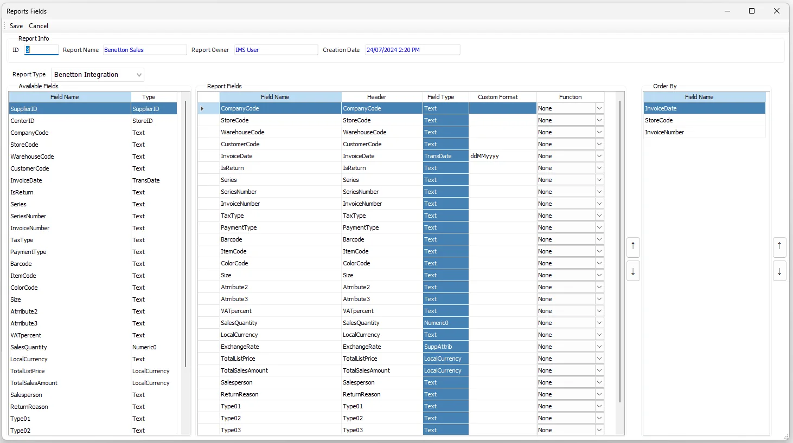

Custom Reports
Custom Reports turns an approved Custom View into a reusable user-facing report definition. The report owner chooses the source, name, access scope, fields, headers, formatting, calculations and sorting; authorized users can then run the finished report from Reports → User-Defined Reports.
Custom Reporting workflow
| Step | Responsibility |
|---|---|
| 1. Base database view | The database administrator creates and validates the required vw_... PostgreSQL reporting view. |
| 2. Custom View | An authorized report administrator registers that database view in Tools → Custom Views and assigns IMS field types. |
| 3. Custom Report | The report owner creates the report definition, chooses who can access it and configures the report fields. |
| 4. User-Defined Report | Authorized users run the active report from Reports → User-Defined Reports. |
| 5. Optional scheduling | Eligible reports can be connected to Tools → Reporting Scheduler for automated file delivery. |
Custom Reports list
The main screen shows the report ID, Report Name, Report Description, report type/Display Name, Report Owner, Creation Date, last modifying user and Last Modified Date.
The filter area organizes the list by Report Type, Active / In Active, My Reports, Shared Reports and Others Reports. Report-administrator access provides the broader administration view, while normal Custom Report access is limited by report ownership/sharing rules.
Create a report
- Click New.
- Enter a Report Name and optional Report Description.
- Select the required Report Type. The available types come from active Custom Views.
- Enable Is Active when the report is ready to be made available to users.
- Choose whether the report is Visible to all users or shared with selected users.
- Click Save.
- Select the report and open Report Fields to design the output.
The user who creates a report becomes its Report Owner. The report owner remains part of the report's access list when access is restricted to selected users.
Report access
Enable Visible to all users when every authorized User-Defined Reports user should be able to use the report. When it is cleared, the lower access area lets the owner select individual IMS users.
Users can be located by ID, User Name, Login Name, Phone No. or Email Address. Select a user to add that account to the report's access list; selected users can be removed from the list before saving.
Configure Report Fields
Select one report in the main list and click Report Fields. This is where the report output is designed.

| Area | Purpose |
|---|---|
| Available Fields | Fields exposed by the selected Custom View, including supported Store/Supplier Custom Attributes. |
| Report Fields | The fields included in the final report and their presentation/calculation settings. |
| Order By | Selected report fields used to define the report's sort sequence. |
Drag a field from Available Fields into Report Fields. Report Fields can then be reordered with the up/down controls. A selected Report Field can also be dragged into Order By, where its sort priority can be reordered independently.
IMS requires at least two Report Fields before the report-field definition can be saved.
Report Field settings
| Setting | Purpose |
|---|---|
| Field Name | The source column from the Custom View. |
| Header | The column heading users see in the finished report. If left blank, IMS derives a heading from the field name. |
| Field Type | The metadata inherited from Custom Views, such as Text, Numeric, LocalCurrency, Percent, StoreID, SupplierID or TransDate. |
| Custom Format | Overrides the normal display format associated with the Field Type. |
| Function | Optional aggregation: None, Sum, Average, Count, Min or Max. |
Calculations and grouping
Aggregation functions are intended for compatible fields. Text, StoreID and SupplierID fields are kept as non-aggregated dimensions.
When at least one report field uses an aggregation function, IMS treats the other non-aggregated fields as grouping fields. This makes it possible to build summaries such as sales by Store, Supplier, Brand, Style, period or other dimensions exposed by the underlying Custom View.
Store and Supplier Custom Attributes
If the Custom View contains a field classified as SupplierID, IMS adds the defined Supplier Custom Attributes to Available Fields. If it contains a StoreID, Store Custom Attributes are added in the same way.
This lets report owners extend a report with business classifications maintained in IMS without asking the database administrator to add each attribute as a dedicated database-view column.
Order By
Drag one or more selected Report Fields into the Order By area. The top-to-bottom sequence determines the report's sort priority. Use the up/down controls to change that priority.
Edit an existing report
Use Edit to change the Report Name, Description, Active state, access list or Report Type.
Delete a report
A Custom Report cannot be deleted while it is still used by one or more Reporting Scheduler tasks. IMS lists the scheduled task names and requires those tasks to be deleted first.
After dependencies are cleared and the user confirms deletion, IMS removes the report's user-sharing records, Report Fields, Order By definition and report header, and records the deletion in the IMS activity log.